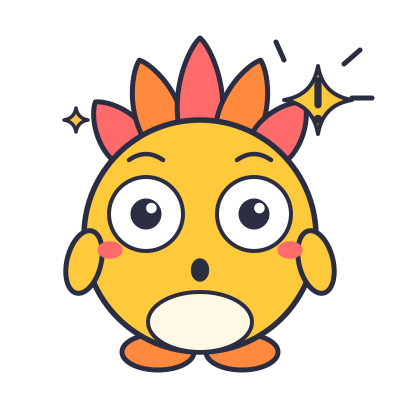

Lesson 9
Group Chat Dynamics
Grades 6-8 (ages 11-13)

Lesson 9: Group Chat Dynamics. 15 minutes: Hook 2, Activity 8, Discuss 3, Takeaway and exit ticket 2.
Start with the routine: Hackles up? Pause. Check. Tell. Use the hand signal for the first step (hand brushed up the back of the neck).
Materials: Unplugged default: Workbook CF-9 page; R9 Escalation Meter cards per group (chat excerpts optional) of 4-5; three signs on the wall (ANNOYING, HURTING, TELL NOW); upstander phrase cards.
If a student discloses something, use the disclosure box for this lesson in your Teacher Guide.
Big idea
Big idea: Group chats can turn from fun to harmful fast. You can save evidence without spreading it, support a target, and know when something is too big for the group and needs an adult now.
Hook · 2 minutes
Hackles up? When a chat starts to feel off or too heated, notice it. You do not have to be sure before you pause or tell someone. Group chats are where friendships live. They can also be where things go sideways.
Hook, read aloud (about 2 minutes). Slide shows the main lines; the full script is here.
Hackles up? When a chat starts to feel off or too heated, notice it. You do not have to be sure before you pause or tell someone. Group chats are where friendships live. They can also be where things go sideways. Think about how a joke can start small, then the group piles on, and soon someone is feeling left out or hurt. Today's case file is about a chat that got loud. When this happens through phones, games or chats, it is called cyberbullying. Our job: figure out when it crosses from annoying to harmful, what to save, and what to do.
Hook
A reminder: every chat in today's files is made up. Please do not describe or name real chats or real people. And everyone in a chat is a person with feelings. It is never the target's fault when a group piles on.
Hook continued.
A reminder: every chat in today's files is made up. Please do not describe or name real chats or real people. And everyone in a chat is a person with feelings. It is never the target's fault when a group piles on.
Activity
Activity: 8 minutes. Group size: whole class, then groups of 4-5.
Materials: Unplugged default: Workbook CF-9 page; R9 Escalation Meter cards per group (chat excerpts optional) of 4-5; three signs on the wall (ANNOYING, HURTING, TELL NOW); upstander phrase cards.
Timer: press T (or the button) to start an 8 minute timer. Steps follow on the next slides.
Activity steps
- 11 minRead the case fileRead the case file together. Follow along on your page.
- 25 minThe Escalation MeterPost three signs on the wall.
Step 1 (1 min): Read the case file > CF-9: The Chat That Got Loud > Amir is in a class group chat. Someone posts a goofy photo of a classmate named Tess with a mean caption. A few people reply with laughing faces. Then someone says, “Let's all stop talking to Tess.” Another person screenshots the chat and sends it to a different group. Tess leaves the chat. Amir saw all of it and did nothing. He feels uneasy and wonders what to do.
Step 2 (5 min): The Escalation Meter (groups of 4-5) Post three signs on the wall: ANNOYING (rude or irritating, but not harming), HURTING (repeated mean behavior, exclusion, humiliation), TELL NOW (threats, hate, sexual pictures or pressure, someone talking about self-harm, or spreading private information). Each group gets 12 Escalation Meter cards (short fictional messages and actions). The group places each card on the meter and writes the first move: ignore, support privately, say something kind in the chat, save evidence, report, tell an adult now.
Timer for these steps: 6 min. Press T to start.
Activity steps
- 31 minSave, do not spreadIf you need evidence, save the words and the usernames and the times, not the hurtful image itself.
- 41 minUpstander phrasesRead the phrase cards aloud and have students pick one they could use.
Step 3 (1 min): Save, do not spread SAY: “If you need evidence, save the words and the usernames and the times, not the hurtful image itself. Do not forward a screenshot to other groups, because that spreads the harm. Evidence is for adults who can help, like a teacher or counselor. If a message includes a private or sexual picture of anyone under 18, do not save or forward it at all. Tell an adult immediately.”
Step 4 (1 min): Upstander phrases Read the phrase cards aloud and have students pick one they could use: “Not cool. Let's stop.” “I am leaving this chat.” “Hey, are you okay? (private message)” “I will go with you to tell someone.” Remind students that a private message counts as upstanding.
Timer for these steps: 2 min. Press T to start.
Talk about it
What was the first moment in the file when someone could have changed the direction? Who could have done it?
Question 1 of 3
Discuss, question 1 of 5 (3 minutes in all).
Talk about it
What is the difference between “annoying” and “hurting”? Who decides?
Question 2 of 3
Discuss, question 2 of 5 (3 minutes in all).
Talk about it
Why does staying silent feel safer but sometimes make things worse?
Question 3 of 3
Discuss, question 3 of 5 (3 minutes in all).
More questions if time allows: 4. How can a screenshot be used in a helpful way, and in a harmful way? 5. What makes a message a “tell now” message? Who is the best adult to tell?
Takeaway
Pause before you add to a pile-on.
Takeaway (2 minutes together with the exit ticket). Do the hand signals as you say each word.
“Pause before you add to a pile-on. Check where the message sits on the meter. Tell an adult when it is hurting or worse. You do not have to fix it alone. It is never the target's fault, and a small kind move from you can change a chat.”
Exit ticket
Write one sentence you could say or send if you saw a group chat start to pile on someone.
Optional: tick here if you would like to talk privately with your teacher or counselor.
Exit ticket. Collect as students leave. Read any check-in requests the same day and pass them to the counselor.
Full text: “Write one sentence you could say or send if you saw a group chat start to pile on someone.” Optional: “[ ] I would like to talk to the teacher or counselor privately.”
The Help Ladder
Next-Rung Rule: if the first person does not help, tell the next one.
Say the sentence out loud with the class: "I need help with something." Remind students that a false alarm is fine and that telling is never getting in trouble.
If a student has trouble naming an adult, the school counselor and nurse are always on the ladder.
Fun Boost
Say it back
Hurting: speak up. Tell-now: tell an adult now.
Level-Up Challenge
Chat Agreement: write a five-norm agreement for a friend group, including what happens when a norm is broken, and pitch it in 30 seconds.
(c) 2026 Competence Collective. Lesson text CC BY-NC 4.0. Hackles name, logos and art: all rights reserved.
Pick ONE boost inside your 15 minutes. The rest are in the Teacher Guide for another day.
2-minute hook variation: First Spark (2 min): read Excerpt B (Remy, Pat, Tess; R9) aloud with no commentary and ask, “Find the first moment someone could have changed the direction.” Students put a finger on the line. Take two answers. This replaces telling them about escalation with finding it.
Debate or game version: Human Meter: post ANNOYING, HURTING, and TELL NOW on three walls. Read a card; students walk to a wall and may switch after hearing a neighbor's reason. For borderline cards (9-6, 9-7), two students on opposite sides each give a 20-second reason. Debate option: “Is leaving a chat upstanding or avoiding?”
Peer-teaching or choice option: Phrase Coaches: pairs rewrite an upstander phrase in the way people really talk, then trade with another pair for a 'would you actually say that?' check. Choice: private message, group message, or adult route.
Level-Up Challenge: Chat Agreement: write a five-norm agreement for a friend group, including what happens when a norm is broken, and pitch it in 30 seconds. Or run a 'chat audit' on a fictional chat.
Say-it-back line (post it): “Annoying: ignore. Hurting: speak up. Tell-now: tell an adult now.”
Timing and extended block: Use eight cards if short. Extended block (30 min): add the three chat excerpts (R9) and the Chat Agreement.